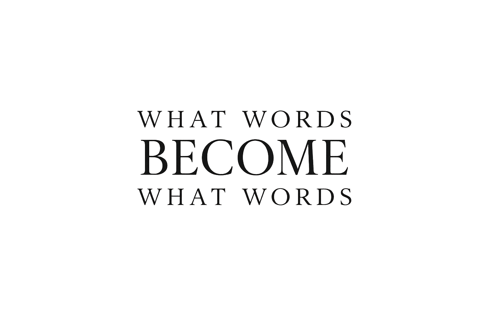
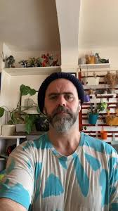

That's not right. Try again.
A literary audio project following a chain of creative influence.
One creator responds.
The next creator inherits only that response.
Through writing and conversation, we follow what words become.
What did this make you create?
A passage from Max Porter's Grief Is the Thing with Feathers enters the chain and is transformed — link by link — into something no one could have predicted.
"You were done being hopeless. Grieving is something you're still doing."
This passage is sent to the first guest. What will it become?
Receives Porter's passage. Creates an original piece of work in response. Joins the hosts for conversation about what emerged.
Never sees the original Porter passage. Receives only Delaney's piece. What will Hollie receive? Unknown. She creates something entirely new in response.
Never sees Porter. Never sees Delaney. Receives only McNish's work. What will Dizraeli receive? Unknown. The transformation goes deeper.
The final fragment from Dizraeli's response becomes the spark for the next episode. What will Episode Two begin with? Unknown. A new chain begins. Nobody plans where it goes.
The chain might begin with grief and end with love.
Nobody planned that. Nobody engineered it.
The audience witnesses the transformation.
THE AUDIENCE SEES THE WHOLE CHAIN.
NO ONE ELSE DOES.
The participants inherit only the link before them.
Each episode begins with a spark.
A passage. A poem. A question. A fragment. A line of text.
The spark is sent to Guest 1.
They create an original piece of work in response. A poem. An essay. A reflection. A story. A letter. Anything.
Guest 1 then joins the hosts for a conversation about what emerged.
Guest 2 never sees the original spark.
They only receive Guest 1's work. They create an entirely new piece in response. Then they join the hosts for conversation.
Guest 3 never sees the original spark. Never sees Guest 1's work.
They only receive Guest 2's piece. They create something new. The chain continues.
The final line, image, idea or fragment from the last guest becomes the spark for the next episode.
Episode 1 creates Episode 2. Episode 2 creates Episode 3. The project becomes self-generating.
Not promotion.
Not career retrospectives.
Not panel discussions.
We are interested in moments when a piece of writing changes the direction of someone's thinking.
Creative work is often made alone.
Conversation often disappears.
What Words Become creates a chain of influence where one act of creation becomes the beginning of another.
We are interested not only in what people make, but what their work makes possible.
Not interviewers. Curators of discovery.
He guides the conversation toward discovery, pushing relentlessly beyond rehearsed anecdotes. His focus remains entirely on the creative pivot and what happens in the spaces between links.

He dissects the mechanical shifts in the writing, exploring how fragments are fundamentally repurposed. He treats every piece of text as a living organism capable of infinite adaptation.
He shapes the precise sonic environment that surrounds the chain. His scoring provides the emotional architecture, amplifying the tension of what the words are actively becoming.
Their role is to explore: what stayed. What changed. What disappeared. What surprised. What was inherited. What was passed forward.
The focus is never biography. The focus is always the work.
"I really felt heard and I did not expect to be met like that."
"I did not expect to want to keep listening."
What Words Become is designed as a cultural project whose first expression is audio.
If this resonates, we'd like to talk.
hello@whatwordsbecome.com